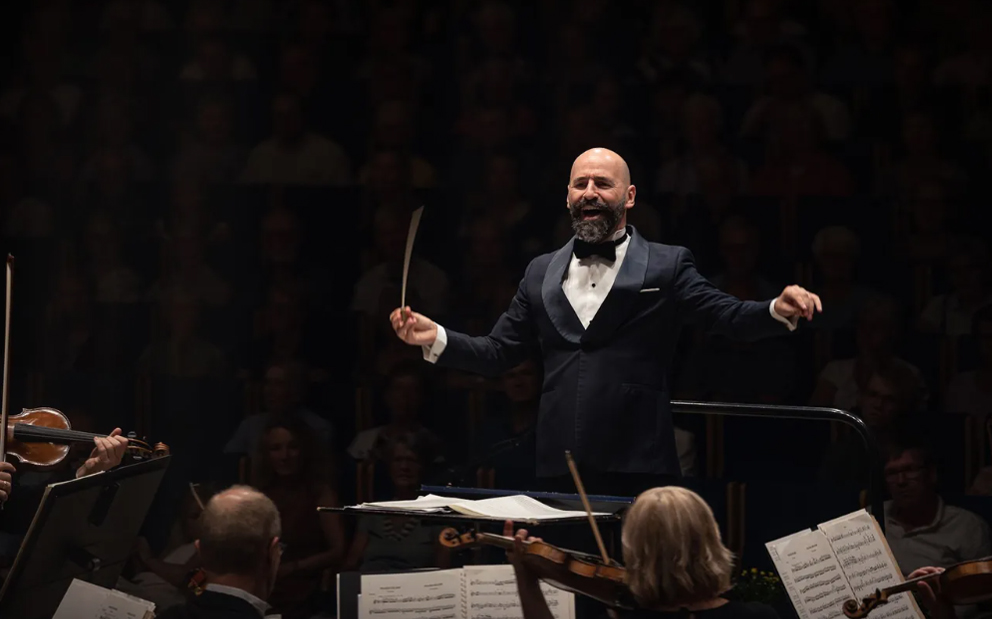
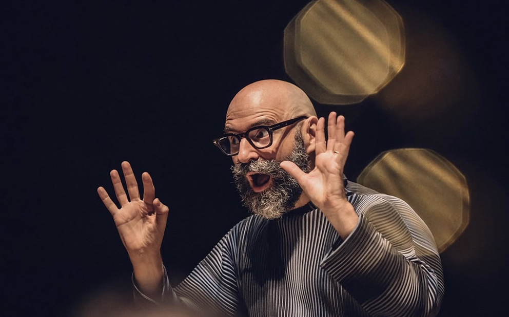

2026 · OUR Recordings
Ravel Abroad
Orchestre symphonique d'Odense
« Plus je progresse, plus je me sens libre »
Pierre Bleuse est directeur musical de l'Ensemble intercontemporain et directeur artistique du Festival Pablo Casals de Prades. Chef principal de l'Orchestre symphonique d'Odense de 2021 à 2026, il est l'invité d'orchestres comme le Royal Concertgebouw Orchestra, le London Philharmonic Orchestra, l'Orchestre de Paris ou le Tokyo Symphony Orchestra.
Violoniste de formation, il dirige le grand répertoire symphonique et la musique d'aujourd'hui avec la même attention : faire dialoguer les œuvres plutôt que les opposer.

Saison 2026-2027

2026 · OUR Recordings
Orchestre symphonique d'Odense
2026 · Alpha Classics
Ensemble intercontemporain
2026 · Dacapo
Rafaell Altino, Orchestre symphonique d'Odense
2024 · Alpha Classics
Ensemble intercontemporain
Diapason d'or de l'année, Choc de Classica
Fanfare
“A simply astonishing disc.”Colin Clarke
Le Monde
22 juin 2024Pierre Gervasoni
Lire l'articleThe Guardian
13 février 2026Fiona Maddocks
Lire l'articleGramophone
juin 2024Richard Whitehouse
Lire l'article
Les concerts du mois et les actualités, une fois par mois.
Worldwide general management
François Guyard
Senior Director, General Manager HarrisonParrott Paris